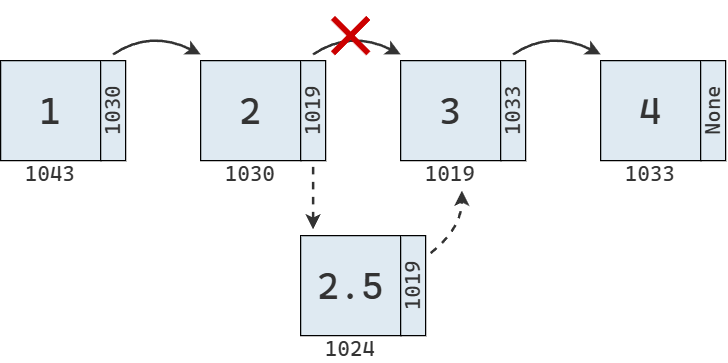
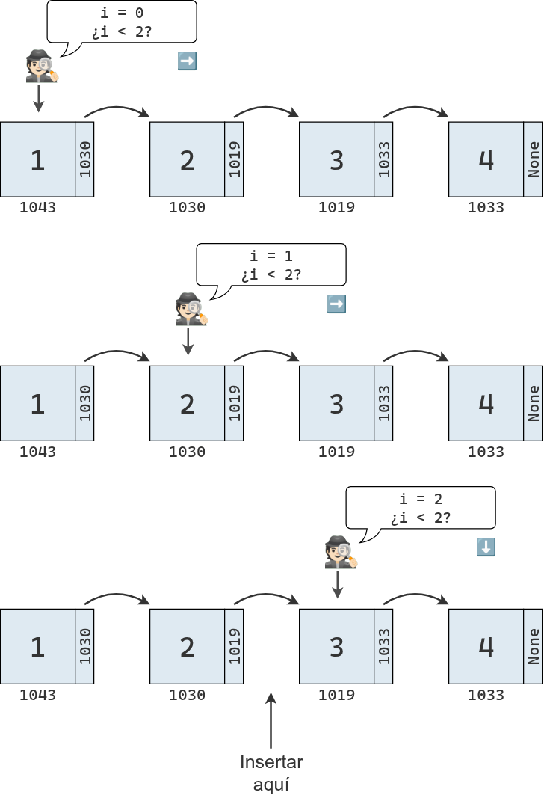

En el apunte anterior exploramos algunas estructuras de datos basadas en arreglos y analizamos su desempeño al realizar distintas operaciones.
Sin embargo, el desempeño no es el único factor a considerar al elegir una estructura de datos. En muchos casos, se eligen ciertas estructuras porque permiten escribir un código más simple y fácil de leer.
En este apunte nos enfocaremos en las siguientes estructuras:
Pilas
Colas
Listas enlazadas
Listas doblemente enlazadas
Estas estructuras pertenecen a la categoría de estructuras lineales. Las estructuras de datos lineales son aquellas en las que los elementos están organizados uno detrás de otro, formando una secuencia. Cada elemento (excepto el primero y el último) tiene un predecesor y un sucesor.
Además, aprenderemos a distinguir entre un tipo de dato abstracto y una estructura de datos concreta.
Pilas
Una pila es una colección de objetos con ciertas restricciones para su inserción y eliminación. Para entender su funcionamiento, podemos imaginar una pila de cajas como la siguiente:
En computación, se dice que la pila es una colección de objetos que se insertan y extraen siguiendo el principio last-in, first-out (LIFO), que significa que “el último en entrar es el primero en salir”.
Podemos imaginar un brazo mecánico que permite leer, quitar o agregar cajas en la pila:
En la computadora, podríamos representar una pila de la siguiente manera:
donde cada caja representa un objeto en memoria. Como ninguna celda tiene propiedades especiales, utilizamos el mismo color para todas:
Lectura
Como ya adelantamos, solo es posible interactuar con el objeto en la cima de la pila. Por lo tanto, solo es posible leer el valor al inicio de la pila, independientemente de que se extraiga o no. Si quisieramos leer un valor posterior, primero deberíamos extraer los valores que están por encima de el.
Para utilizar una pila en un programa, necesitamos una implementación concreta de la misma, la cual se apoya en otras estructuras de datos.
Una forma de implementar una pila es a partir de un arreglo al que se le imponen ciertas restricciones. Por ejemplo, podemos crear una clase Pila que, internamente, almacene los valores utilizando una lista de Python.
Para entender la relación entre la pila y el arreglo subyacente, se puede imaginar que la pila se rota o se tumba horizontalmente. El elemento en la cima de la pila corresponderá al último elemento del arreglo, y la base de la pila al primer elemento del arreglo.
Que solo interactuemos con la cima de pila implica que solo interactuamos con la cola del arreglo.
Cuando insertamos un elemento, lo hacemos al final del arreglo, extendiendo su longitud:
Internamente, las pilas utilizan un arreglo “protegido” para almacenar los datos.
2
Para insertar un elemento, solo se necesita el valor a agregar, no su posición, ya que siempre se incorpora en la cima de la pila (es decir, al final del arreglo interno).
3
Al extraer un elemento, tampoco se requiere indicar la posición, ya que siempre se remueve el último elemento ingresado, el que se encuentra en la cima de la pila.
Gracias al protocolo LIFO, una pila puede servir para invertir el orden de los datos.
Por ejemplo, si apilamos los valores 1, 2 y 3 en ese orden, al desapilarlos los obtendremos en orden inverso: 3, 2 y 1.
Esta idea se puede usar en muchos casos. Por ejemplo, podríamos querer imprimir las líneas de un archivo en orden inverso para mostrar un conjunto de datos en orden descendente en lugar de ascendente.
Para hacerlo, basta con leer cada línea, apilarla en la pila y luego imprimirlas en el orden en que se van desapilando.
def invertir_archivo(origen, destino): pila = Pila()withopen(origen) as archivo_origen:for linea in archivo_origen: pila.insertar(linea.rstrip("\n"))withopen(destino, "w") as archivo_destino:whilenot pila.vacia: archivo_destino.write(pila.extraer() +"\n")
Si tenemos el siguiente archivo con un extracto de la letra de Tu misterioso alguien de Miranda!:
def verificar_agrupamientos(expr): apertura ="([" cierre =")]" pila = Pila()for caracter in expr:if caracter in apertura: pila.insertar(caracter)elif caracter in cierre:if pila.vacia: # Nada con que emparejarloreturnFalseif cierre.index(caracter) != apertura.index(pila.extraer()): # MismatchreturnFalsereturn pila.vacia
La función recorre la secuencia original de izquierda a derecha utilizando una pila pila para facilitar la verificación de los símbolos de agrupación.
Cada vez que se encuentra un símbolo de apertura, lo apilamos en pila. Y cuando se encuentra un símbolo de cierre, desapilamos un elemento de pila (si no está vacía) y verificamos que ambos símbolos formen un par válido.
Si al llegar al final de la expresión la pila está vacía, significa que la expresión está correctamente balanceada. De lo contrario, debe haber quedado en la pila un símbolo de apertura sin su correspondiente cierre.
verificar_agrupamientos("(3 + (4 * 5))")
True
verificar_agrupamientos("[3 + (4 * 5)]")
True
verificar_agrupamientos("(3 + (4 * 5)")
False
verificar_agrupamientos("(3 + [(4 * 5)")
False
Colas
La cola es otra estructura de datos fundamental, un pariente cercano de la pila. Al igual que ella, la cola es una colección ordenada de objetos. Sin embargo, los objetos se insertan y se extraen siguiendo el principio first in, first out (FIFO), es decir, el primero en entrar es el primero en salir.
Para familiarizarnos con esta estructura, podemos imaginar una fila de personas esperando para entrar a un banco, como se muestra en la imagen:
Las colas son un tipo de dato abstracto, ya que definen cómo deben comportarse, pero no cómo se implementan. Para utilizarlas en un programa necesitamos una implementación concreta.
Una forma de hacerlo es mediante un arreglo restringido, donde solo se puede extraer el elemento del frente (índice 0) y agregar nuevos elementos al final (índice n).
Cuando se desea insertar un nuevo elemento en la estructura de datos, siempre se hace al final.
Si luego se desea agregar otro elemento, simplemente se repite el proceso.
Por el contrario, a la hora de extraer un elemento, solo se puede realizar desde el frente de la cola:
Una implementación en Python de la cola basada en arreglos es la siguiente:
El siguiente programa contiene un ejemplo más realista donde se usa una cola como estructura de datos para una gestionar llamadas en espera.
def simular_centro_de_llamadas(tiempo_total=15): cola = Cola() nombres = ["Ana", "Bruno", "Carla", "Damián", "Eva"] tiempo_inicial = time.time()while time.time() - tiempo_inicial < tiempo_total: accion = random.random() ahora = datetime.now().strftime("%H:%M:%S")# Simula la llegada de una llamada, con 50% de probabilidadif accion <0.5: llamada = {"cliente": random.choice(nombres), "hora": ahora} cola.insertar(llamada)print(f"[{ahora}] Nueva llamada de {llamada['cliente']}")print(f" → Llamadas en espera: {len(cola)}")# Simula la atención de una llamada, con 40% de probabilidadelif accion <0.9andnot cola.vacia: llamada = cola.extraer()print(f"[{ahora}] Atendiendo a {llamada['cliente']} (recibida a las {llamada['hora']})")print(f" → Quedan {len(cola)} llamadas en espera")# Caso contrario, no se hace nadaelse:print(f"[{ahora}] Sin actividad...")# Controla la velocidad de la simulación time.sleep(random.uniform(1, 2))print("\nFin de la simulación.")if__name__=="__main__": simular_centro_de_llamadas()
En segundo lugar, estas estructuras restringidas proporcionan un modelo mental claro para resolver ciertos problemas. La pila introduce el principio last in, first out (LIFO), “el último en entrar es el primero en salir”, que puede aplicarse para resolver una amplia variedad de problemas, como el del verificador mencionado antes.
Finalmente, la familiaridad con la naturaleza LIFO de las pilas hace que el código sea más legible y predecible para otros desarrolladores: cuando alguien ve una pila, sabe que el proceso sigue una lógica LIFO.
Listas enlazadas
En esta sección vamos a introducir una estructura de datos llamada lista enlazada (linked list), que constituye una alternativa a las secuencias basadas en arreglos, como la lista de Python. Tanto las listas enlazadas como los arreglos mantienen los elementos en un cierto orden, pero lo hacen siguiendo distintas estrategias.
Por un lado, un arreglo almacena los datos en una región contigua de memoria, lo que permite acceder rápidamente a cualquier elemento mediante su índice y facilita operaciones matemáticas vectorizadas. Sin embargo, este diseño puede volver poco eficientes tareas como la inserción o la eliminación de elementos.
Por el otro, una lista enlazada se apoya en una estructura llamada nodo, que le permite distribuir los distintos elementos de la secuencia en diferentes ubicaciones de la memoria y modificarlos o reorganizarlos con mayor flexibilidad.
Para representar estos nodos podemos crear una clase Nodo, que define objetos que contienen un atributo para el valor y otro para la referencia al siguiente nodo de la lista.
class Nodo:def__init__(self, valor):self.valor = valorself.siguiente =Nonedef__repr__(self):returnf"Nodo({self.valor})"Nodo(75)
Nodo(75)
Podemos instanciar múltiples nodos y enlazarlos entre sí, para luego recorrerlos de la forma en que lo haría una lista enlazada.
nodo1 = Nodo(1)nodo2 = Nodo(2)nodo3 = Nodo(3)nodo4 = Nodo(4)# Enlazar nodosnodo1.siguiente = nodo2nodo2.siguiente = nodo3nodo3.siguiente = nodo4 # Recorrer e imprimir la lista enlazadaactual = nodo1while actual:print(actual, end=" -> ") actual = actual.siguienteprint("None")
Nodo(1) -> Nodo(2) -> Nodo(3) -> Nodo(4) -> None
Como se puede observar, aunque los nodos sean independientes y puedan almacenarse en cualquier lugar de la memoria, los enlaces entre ellos permiten construir una secuencia ordenada.
Implementación básica
Lo único que se necesita para implementar una lista enlazada a partir de un conjunto de nodos es la dirección de memoria donde comienza la lista enlazada, es decir, donde se ubica el primer nodo. Como cada nodo guarda un enlace al nodo siguiente, basta con seguir esos enlaces uno a uno para reconstruir toda la secuencia.
class ListaEnlazada:def__init__(self, primer_nodo=None):self.primer_nodo = primer_nodolista = ListaEnlazada(nodo1)
El diagrama de abajo representa la lista enlazada que acabamos de crear. Cada nodo contiene un valor y una referencia al siguiente nodo en la secuencia. Estas referencias son los enlaces que conectan los nodos y dan forma a la estructura.
El segundo diagrama muestra cómo se vería esa misma lista en la memoria. Los valores resaltados en rojo representan los nodos, que, como puede observarse, se encuentran dispersos en distintas ubicaciones.
Cuando trabajamos con un arreglo contiguo, vimos que podíamos determinar la dirección de cualquier elemento a partir de la dirección base y el índice solicitado. En cambio, en una lista enlazada, los nodos no están almacenados contiguamente en memoria, por lo que ya no podemos usar esa estrategia.
Gráficamente, el proceso se ve de la siguiente manera:
Si tenemos una lista enlazada de \(N\) elementos y queremos leer el elemento en la última posición, la operación nos llevará \(N\) pasos. Por lo tanto, a diferencia de la lectura en un arreglo contiguo, que es de orden \(O(1)\), la lectura en una lista enlazada es de orden \(O(N)\).
En este punto se sabe que se ha llegado al nodo del índice solicitado, y se devuelve su valor.
Búsqueda
Ya sabemos que la búsqueda es una operación estrechamente relacionada con la lectura: en lugar de tomar un índice y devolver un valor, toma un valor y devuelve su índice (si es que el valor se encuentra en la secuencia).
La búsqueda se comienza explorando el primer nodo, con un acumulador de índice inicializado en 0. En cada paso, se compara el valor del nodo con el valor buscado:
Si son distintos, se avanza al siguiente nodo y se incrementa el acumulador.
Si son iguales, se devuelve el valor del índice.
Si no existe un siguiente nodo, es decir, si se llega al final de la lista, significa que el valor buscado no se encuentra en la secuencia.
El proceso se puede representar de la siguiente manera:
Se inicia el recorrido desde el primer nodo de la lista, comenzando con el índice 0.
2
Se itera hasta que el bloque ejecute un return o un break
3
En cada iteración, se compara el valor almacenado en el nodo actual con el valor buscado. Si el valor coincide, se devuelve el índice correspondiente y la búsqueda termina. Si no coincide, se avanza al siguiente nodo.
4
Si el siguiente nodo es None, significa que se llegó al final de la lista sin encontrar el valor, se termina el bucle. Caso contrario, se incrementa el índice en 1 y se ejecuta el bucle desde el iniciio.
5
En este punto se sabe que el valor no se encuentra en la lista y se devuelve None. Podría lanzarse un ValueError.
Inserción
Hasta ahora, el desempeño de las listas enlazadas es igual o peor que el de un arreglo contiguo. Son menos eficientes para leer e igual de eficientes para buscar.
Sin embargo, cuando consideramos la inserción, nuestra percepción sobre esta estructura comienza a cambiar. En un arreglo contiguo, el peor escenario ocurre al insertar al principio, ya que es necesario desplazar todos los elementos una celda a la derecha. En cambio, en una lista enlazada, insertar un elemento al inicio requiere un solo paso, por lo que es una operación de orden \(O(1)\).
Para insertar un elemento al inicio de una lista enlazada, solo es necesario crear un nuevo nodo y enlazarlo con el nodo que era el primero antes de la inserción. Además, debemos actualizar la referencia al primer nodo dentro del objeto de tipo ListaEnlazada para que apunte al nuevo nodo.
Si se desea insertar un elemento en una posición interna de la lista, en teoría la operación de inserción en sí misma lleva solo un paso, ya que no es necesario mover elementos, solo se requiere actualizar los enlaces entre nodos.
El siguiente diagrama muestra la inserción del valor 2.5 entre el 2 y el 3 en nuestra lista enlazada. Se crea un nuevo nodo que apunta a la ubicación del tercer elemento y se modifica el enlace del segundo elemento para que apunte al nuevo nodo.

Sin embargo, antes de poder realizar este cambio de enlaces, es necesario encontrar los nodos involucrados, lo que requiere recorrer la lista desde el inicio. Si queremos insertar el valor 2.5 en el índice 2, es necesario realizar la búsqueda que describe el diagrama debajo.

Una vez identificados los nodos involucrados, se actualizan sus enlaces. La inserción no requiere mover valores en memoria, pero sí es necesario recorrer la lista desde el principio para los nodos que deben ser actualizados.
Luego de la inserción, los elementos de la lista quedan distribuidos en memoria como se muestra en el siguiente diagrama:
Finalmente, el peor de los escenarios se da cuando se desea insertar un elemento al final de la lista. Para ello hay que atravesar \(N\) elementos hasta encontrar el último. Una vez allí, se actualiza su enlace para que apunte a la dirección del nodo creado para el nuevo valor.
Si el índice es 0, significa que el nuevo nodo debe insertarse al inicio de la lista. En ese caso, se enlaza el nuevo nodo al antiguo primer nodo y el nuevo nodo se convierte en el primer nodo de la lista
3
Si no se trata del primer nodo, se inicia un recorrido desde el comienzo de la lista, con el índice actual igual a 0.
4
Se avanza nodo a nodo hasta llegar al nodo anterior a la posición donde se desea insertar. Una vez allí, se ajustan las referencias: el nuevo nodo apunta al siguiente del nodo actual, y el nodo actual pasa a apuntar al nuevo nodo.
Eliminación
En una lista enlazada, la eliminación tiene mucho en común con la inserción. Primero, eliminar un elemento no requiere mover valores en memoria, sino simplemente actualizar los enlaces entre nodos. Segundo, la eliminación al inicio de la lista es muy eficiente; basta con hacer que primer_nodo apunte al segundo nodo. Por último, cuando la eliminación no ocurre al principio, es necesario recorrer la lista hasta encontrar los nodos cuyos enlaces deben modificarse.
Si el índice es 0, significa que se debe eliminar el primer nodo de la lista. En ese caso, solo es necesario actualizar la referencia primer_nodo para que apunte al segundo nodo, descartando así el primero.
2
Si no se trata del primer nodo, se inicia el recorrido desde el comienzo de la lista, con el índice actual igual a 0.
3
Se avanza nodo a nodo hasta llegar al nodo anterior al que se desea eliminar.
4
Una vez allí, se actualizan las referencias para que el nodo actual apunte al nodo siguiente del que será eliminado, de modo que el nodo en la posición indicada quede desconectado de la lista.
La clave está en que los pasos de inserción y eliminación en sí mismos son operaciones de orden \(O(1)\). Es cierto que esto solo ocurre cuando ya conocemos el nodo correcto, por ejemplo, al insertar o eliminar al comienzo, pero hay situaciones en las que ese nodo ya está accesible por otro motivo dentro del programa.
Por ejemplo, si tenemos que eliminar elementos erróneos de una secuencia, tendremos que recorrerla completa tanto si usamos un arreglo como una lista enlazada. La diferencia está en el costo de cada eliminación. En una lista enlazada, basta con actualizar los enlaces, sin mover valores en memoria. En cambio, en un arreglo, cada vez que se elimina un elemento es necesario desplazar todos los elementos posteriores, lo que hace el proceso más costoso.
Listas doblemente enlazadas
Existen varios tipos de listas enlazadas. La que vimos hasta ahora es la lista enlazada simple, o clásica, donde cada nodo tiene una referencia al nodo siguiente.
Otra variante es la lista doblemente enlazada, en la que cada nodo mantiene dos referencias: una al nodo anterior y otra al siguiente. En este caso, el primer nodo tiene la referencia anterior vacía, y el último nodo tiene la referencia siguiente vacía. A su vez, la clase mantiene referencias al primer y al último nodo de la lista.
Si mantenemos referencias tanto al primer como al último nodo, una lista doblemente enlazada permite acceder de forma inmediata a ambos extremos de la secuencia. Además, insertar o eliminar elementos en cualquiera de ellos es una operación de orden \(O(1)\), lo que la hace una estructura muy adecuada para implementar una cola.
En comparación, cuando usamos un arreglo para almacenar los elementos, agregar un nuevo valor al final tiene un costo \(O(1)\), pero extraer desde el principio requiere mover los \(N - 1\) elementos restantes, lo que implica un costo \(O(N)\).